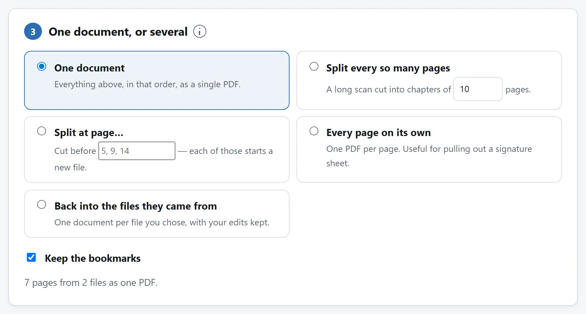
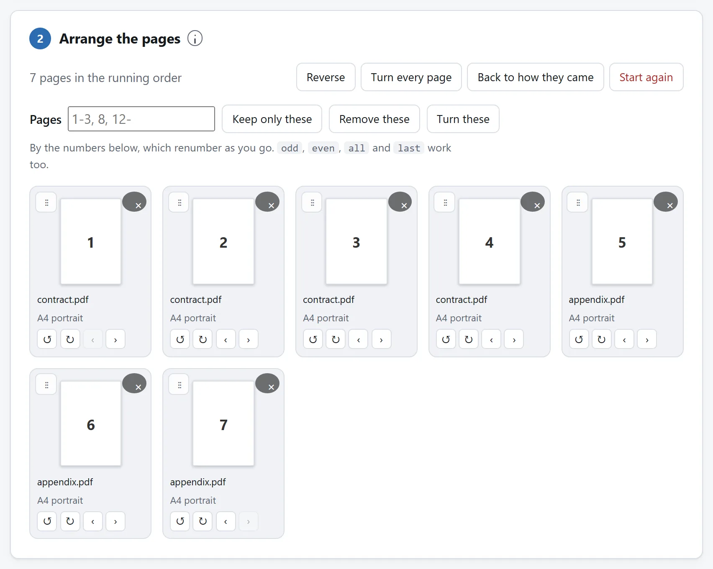

简短的回答
打开 PDF 合并与拆分，把要用的每个文件都拖进去，再把页面拖成你要的顺序。然后说清楚它是出成一份文件还是好几份，按下按钮。什么都不会被上传：文件是你自己的浏览器打开、拆散、再写回去的。
人们分开去搜的三件事——合并、拆分、重排——在这儿是同一个界面，因为它们本来就是同一个操作，只是最后的答案不同：挑出一些页面，把它们排好，再决定它们出来时是几个文件。
完整申请包，或只发指定页
求职信、表单和证明按清单顺序添加，选一个输出文档。每格的来源文件名和页码说明从哪来，小位置标签说明排在哪。格子只显示形状标签，不显示内容，成品要逐页打开检查。填写值尤其注意同名字段冲突警告，数字签名原件另存。
只发证书或附录，先找原件实际页位置，添加 PDF，填 2-4, 9，选“只保留这些”。范围计当前位置，不看印刷页码“iii”。导出后核对四页顺序。这里只删整页，保留页的私密文字用遮盖。
把两份或更多文件合到一起
先选第一个文件，再选第二个；每个文件的页面都会接在当前顺序的末尾，所以你可以不断从不同文件夹里添文件，而不用从头再来。要是顺序进错了，抓住页面的把手拖动，或者用每张卡片上的箭头。
合并不会重新编码任何东西。每一页的内容，以及它用到的每一种字体、每一张图片、每一段矢量图形，都是原样搬过去的，所以文字照样能选、能搜，扫描件还是那份扫描件。合出来的文件通常比两个输入加起来略小，这不是压缩——那是页面外围的结构只写了一遍，而不是两遍。
页面各自保留自己的尺寸。把一份 A4 的报告和一份 Letter 的附录合到一起，你得到的就是一份两种尺寸都在里面的文件，因为文件本身就是这么写的。把别人的页面缩放到同一种纸张尺寸是另一个操作，也不是一个合并工具该悄悄替你做的。
把一份文件拆成好几份
切法有四种，你要哪一种，取决于你为什么要切：
- 每隔几页切一刀。适合把原本是一摞独立文件的东西一口气扫成的长文件——十二张工资条，每张两页。
- 在你指定的页码切。适合章节起始页你看得见的报告。你输入的每一个数字都开启一个新文件。
- 一页一个文件。适合从一沓里把某一张签字页或者证书拎出来。
- 按来处还原成原来的几个文件。只有在你合并了不止一个文件时才出现，改完东西之后很好用：一次把三份扫描件里的空白页都删掉，再拿回三个文件。
要是你只想从一份长文件里取几页，根本不用拆。把要的页码写进范围框—— 1-3, 8, 12-——按「只留这些」，直接搭出一份文件。
输出不止一个文件时，会打成一个 ZIP 交给你。五十次下载就是五十次保存提示，差不多谁都在那儿放弃了。

重排、旋转和删页
抓住卡片的把手拖动，就能挪位置。每张卡片上的箭头把它往前后挪一格，或者一次转九十度——从扫描仪里横着出来的那页，就靠它扶正。× 是删掉它。
只要涉及的页数超过两三页，就改用范围框。它认你在纸上会写的那些写法：1-3, 8, 12-，另外还有 odd、even、all 和 last。留下这些、删掉这些，或者转这些。有个常见的：双面扫描里每隔一页就是倒的，那就是 even 加两次旋转。
卡片上的大数字是来源页码，始终跟随页面。小位置标签随操作改变，范围输入框使用这个数字。按按钮前不会写出文件，无需撤销。“恢复原来顺序”会恢复全部页面的初始排列。

重排之后什么留得下，什么留不下
这是没有哪个工具会告诉你的部分，也是合出来的文件有时会让人觉得哪里说不上来地坏了的原因。
PDF 不是一摞页面。它是一张图，而其中相当一部分说的是整份文件、而不是某一页：书签面板、链接、表单、屏幕阅读器所依的阅读顺序，还有把前四页叫作「i、ii、iii、 iv」的那套编号。你一动页面，这些每一样都得重建，或者被丢掉。
- 书签会被重建。它指的那页还在，它就指向那页挪去的新位置。它指的那页被你删了，它就走——除非它下面还有活下来的条目，那它就作为一个标题留下，因为章的题目仍然在章所在的地方。合并多个文件时，每个文件的书签会嵌在一个以文件名命名的标题之下，一份合出来的报告能翻得动，全靠这个。
- 链接会被跟着走。从第 2 页指向第 40 页的链接，知道第 40 页去了哪儿，包括 Word 和 LaTeX 为每个标题写下的那些具名目标。目标没跟过来的链接，后面会留成空的，而不是去指现在恰好落在那个位置的某一页。
- 填好的表单能留下，而且新文件会被登记成表单，好让阅读器把它当表单对待。有个值得知道的怪癖：同名的两个字段，在任何阅读器看来都是同一个字段，所以把同一张表单的两份合到一起，它们就被绑在了一块儿——在一个里打字，另一个也会跟着填上。
- 打过标签的阅读顺序留不下。它描述的是一个已经不存在的次序，而对屏幕阅读器来说，错的顺序比没有顺序更糟。要是一份文件的无障碍标签很重要，就把原件一并留着。
- 页面标签也留不下。「iii、iv、1、2」这套编号，是关于一个你刚刚改掉的次序的陈述。
- 附件和文档脚本也留不下。挂在文件上的附件属于文件，而不属于哪一页。运行 JavaScript、把表单提交到某处、启动某个程序这类动作，不会被带进你的新文件里，而对来自别人的页面来说，这正是应有的默认。
数字签名是特殊的一项，也不是哪个工具的短板：签名担保的是当时那一份文件。你挪一页，它就失效了，因为它待在那儿就是为了告诉你这件事。
加了密码的文件
工具拒绝加密 PDF，包括很多办公复印机生成的空密码文件。解除保护与移动页面是两件事，工具不应悄悄替你做前者。先用 PDF 解锁工具生成无保护副本，需要时提供有效密码。
检查结果
打开它，看三样：页数、顺序，还有——如果原来的文件有的话——书签面板和一两个链接。
第一样，这里的工具在把文件交给你之前就替你做了。每一份做好的文件，都会被读你原件的那同一段代码重新打开一遍，页数是靠走一遍页面树数出来的，而不是相信文件里写着的那个数。要是那和你要的对不上，那就压根不给你下载。
为什么这件事不需要服务器
合并听起来像服务器的活，在网络存在的大半时间里它也确实是。但它实际做的，是解析文件结构、把某一页依赖的对象拷进一个新文件、再写一张新的交叉引用表。没有像素被解码，也没有任何东西被渲染。浏览器已经能把这些全做完，好多年了。
而这件事在这儿比在几乎任何别处都要紧，因为人们合并的是什么。会被拼到一起的文件，都是从某处来的：一份合同和它的签字页、一张护照扫描件和一份银行流水、一封医生的信和一张申请表。一个在线合并服务一次就收到了它们全部，已经归拢好，来自同一个人。这是大多数人一辈子做过的最能说明问题的一次上传。
这里的工具没有任何网络功能，页面的 Content-Security-Policy 里写着它允许联系的每一个地址，没有一个属于本站。把页面加载好，拔掉网线，照样合一份试试。
把文件传给在线转换器安全吗？那一页还列了另外三条这样的检查。